Definitionsbereich - Folgeaktionen
Im Bereich "Folgeaktionen" können die Folgeaktionen eines Workflowschrittes definiert werden, wobei hier unterschieden wird ob es sich beim Schritt der ausgeführt wird um einen "neuen" Schritt handelt Aktionen Neuanlage), oder ob ein bestehender Schritt bearbeitet wird (Aktion Bearbeitung).
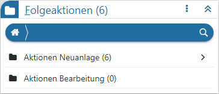
Ø Kopfzeile
In der Kopfzeile des Bereichs wird neben der Bezeichnung "Folgeaktionen" auch die Gesamtanzahl der aktuell hinterlegten Aktionen angezeigt.
Achtung
Handelt es sich um einen Workflow-, End- oder Nebenschritt, welcher von einem Musterschritt abgeleitet wurde, so wird diese Verbindung ebenfalls in der Kopfzeile dargestellt.
Ø  Menü
Menü
Durch Anwahl des Menüs werden, abhängig vom aktuell gewählten Workflow-Objekt, weitere Funktionen zur Verfügung gestellt:
ü Entsperren / Sperren
Handelt es
sich um einen Workflow-, End- oder Nebenschritt, welcher von einem Musterschritt
abgeleitet wurde, so kann hier definiert werden, ob die Folgeaktionen fix vom
Musterschritt kommen oder editierbar sein sollen.
ü Maximieren / Minimieren
Bei
einem Maximieren werden die Folgeaktionen als einziger Bereich in der Definition
angezeigt, bzw. bei einem Minimieren wieder alle Bereiche in der Definition.
ü Neu
Mit Hilfe dieser Auswahl
können neue Folgeaktionen hinzugefügt werden. Hierfür öffnet sich zunächst das
Fenster "Aktionen", in welchem alle Aktionen aufgeführt werden.
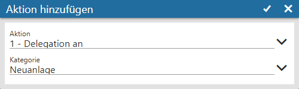
Nach Auswahl der neuen Aktion wird diese per Button
 in die Tabelle
übernommen und das Detaileinstellungsfenster geöffnet (weitere Informationen
entnehmen Sie bitte den nachfolgenden Absätzen).
in die Tabelle
übernommen und das Detaileinstellungsfenster geöffnet (weitere Informationen
entnehmen Sie bitte den nachfolgenden Absätzen).
Hinweis
Wurde der Bereich "Folgeaktionen" maximiert, so können neue Aktionen über die Tastenkombination ALT + N direkt hinzugeführt werden.
Neuanlage / Bearbeitung
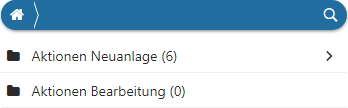
Ø Aktionen Neuanlage / Aktionen Bearbeitung
Der Bereich "Folgeaktionen" unterteilt sich zunächst in folgende Unterbereich:
ü Aktionen Neuanlage
Wenn eine
Folgeaktion bei der Neuanlage eines CRM-Schritts ausgeführt werden soll, so muss
diese unter "Aktionen Neuanlage" hinterlegt werden.
ü Aktionen Bearbeitung
Wenn eine
Folgeaktion bei Bearbeiten eines bestehenden CRM-Schritts ausgeführt werden
soll, so muss diese unter "Aktionen Bearbeitung" hinterlegt werden.
Hinweis
Das Drag & Drop von Einträgen in einem "CRM-Kalender" zählt auch zum Editieren.
Tabelle "Folgeaktionen"
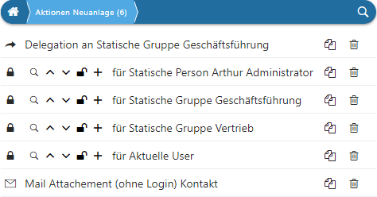
Ø Tabelle
In der Tabelle werden alle Folgeaktionen dargestellt. Wenn eine Aktion bearbeitet werden soll, so muss diese nur per Mausklick ausgewählt werden. Die Reihenfolge der Abarbeitung der Folgeaktionen kann wiederum per Drag & Drop angepasst werden.
Hinweis
Neue Folgeaktionen werden über das Menü der Kopfleiste (Funktion "Neu") hinzugefügt.
Ø  Folgeaktion kopieren
Folgeaktion kopieren
Mit Hilfe dieses Buttons kann die Folgeaktion kopiert werden.
Ø  Fiolgeaktion Löschen
Fiolgeaktion Löschen
Durch Anwahl dieses Tabellenbuttons wird die Folgeaktion entfernt.
Fenster "Aktion hinzufügen"
Nach Anwahl der Funktion "Neu" kann über das Fenster "Aktion
hinzufügen" eine neue Folgeaktionen gewählt und durch Anwahl des Buttons hinzugefügt werden. Anschließend wird,
abhängig von der gewählten Aktion, das entsprechende Einstellungsfenster
geöffnet.
Ø Aktion
Aus der Auswahlliste kann die gewünschte Folgeaktion gewählt werden. Alternativ dazu kann der Suchbegriff eingegeben und die gewünschte Folgeaktion aus den Suchergebnis ausgewählt werden. Folgende Folgeaktionen stehen zur Verfügung:
ü 0 -Mailversand an
An die
angegebene Person, Benutzergruppe, oder Personengruppe wird ein Email versandt.
Hierzu muss es für den Empfänger des Mails einen Login (=WebBenutzer) geben oder
einen WinLine-Benutzer, welcher eine Mailadresse zugewiesen hat.
ü 1 - Delegation an
Der Fall wird
an ein "Objekt" (Auswahl des Objektes erfolgt in einem weiteren Schritt - z.B.
an den Vertreter), an die angegebene Person, Benutzergruppe, oder Personengruppe
weitergeleitet.
Hinweis
Bei einer Delegation an einen Vertreter, muss bei dem Vertreter im Vertreterstamm die gleiche Mailadresse hinterlegt sein, wie bei dem Benuzter. Beim Benutzer ist wiederum die Checkbox "auf erlaubte Konten einschränken" aktiviert und der Vertreter zugewiesen.
ü 2 - Splitte Fall
Mit dieser
Aktion kann ein Fall aufgesplittet werden. D.h. vom bestehenden Fall wird ein
neuer CRM-Fall abgeleitet, welcher in der Folge für sich alleine steht, aber
automatisch mit dem Ausgangsfall verknüpft ist.
Hinweis 1
Nach dieser Folgeaktion muss in der Regel die Folgeaktion "6 - Schreibe Workflowschritt" ausgeführt werden.
Hinweis 2
Folgeaktionen die sich nach dem Eintrag "Splitte Fall" befinden, beziehen sich immer auf den jeweiligen Tochterfall.
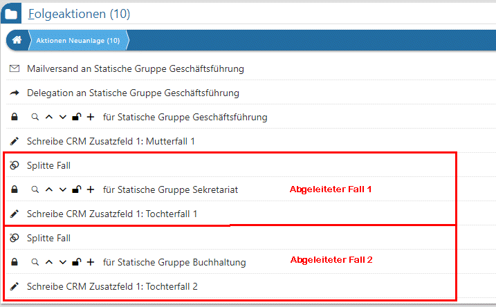
ü 3 - Fallrechte eintragen
Mit
dieser Aktion wird einem sogenannten "Zielobjekt" (Benutzer, Gruppen, etc.) die
CRM-Fallrechte zugewiesen, d.h. wer darf z.B. den CRM-Fall sehen und / oder
bearbeiten.
Hinweis
Die Fallrechte gelten hierbei immer für den gesamten CRM-Fall und nicht pro Schritt. D.h. wurde einmal ein z.B. Lese-Recht gewährt, so muss dieses in der Folge nicht immer wieder hinterlegt werden.
Bei der Vergabe der Fallrechte an einen Vertreter, muss bei dem Vertreter im Vertreterstamm die gleiche Mailadresse hinterlegt sein wie bei dem Benuzter. Beim Benutzer ist die Checkbox "auf erlaubte Konten einschränken" aktiviert und der Vertreter zugewiesen.
Achtung
Eine Änderung in bestehenden und verwendeten Workflows hat keine Auswirkung auf bereits erfasste CRM-Fälle.
ü 4 - Lösche Fallrechte von
Mit
dieser Aktion wird einem sogenannten "Zielobjekt" (Benutzer, Gruppen, etc.) die
CRM-Fallrechte komplett entzogen.
ü 5 - Alle Fallrechte
löschen
Durch diese Folgeaktionen werden allen sogenannten "Zielobjekten"
(Benutzer, Gruppen, etc.) sämtliche CRM-Fallrechte entzogen.
Beispiel
Ein CRM-Fall soll ab einem bestimmten Schritt nur mehr von einem Benutzer oder Benutzergruppe bearbeitet werden. Dabei werden zuerst alle Berechtigungen mit Hilfe dieser Aktion gelöscht und im nächsten Schritt nur mehr für die gewünschten Benutzer vergeben.
ü 6 - Schreibe
Workflowschritt
Mit dieser Aktion kann ein neuer Schritt bzw. neuer Workflow
angestoßen werden. In der Regel wird diese Folgeaktion nach "2 - Splitte Fall"
hinterlegt.
Beispiel
Es wird ein Fall gesplittet und für den gesplitteten Fall soll gleich ein weiterer Schritt ausgeführt werden. Dazu müsste zuerst die Folgeaktion "2 - Splitte Fall" gewählt werden und mittels nächster Folgeaktion "6 - Schritt schreiben" kann bereits ein weiterer Schritt geschrieben werden
Achtung
Wird ohne die Aktion "2 - Splitte Fall" gearbeitet, so wird der neue Schritt im Kontext zum aktuellen Workflow geschrieben. Dieses soll nur vorgenommen werden, wenn es sich um Folgeschritte des aktuellen CRM-Prozesses handelt.
ü 9 - Push-Nachricht senden
Mit
dieser Aktion kann eine Push-Nachricht versendet werden. Die Voraussetzung für
eine aktive Anzeige der Nachricht ist abhängig vom Endgerät:
ü Desktop-PC
Der Hinweis auf eine
Push-Nachricht erfolgt über das Programm "cwltask.exe", wobei die Nachrichten
mit Hilfe des WinLine Servers transportiert werden. Folgende Grundvoraussetzung
sind hierbei zu erfüllen:
ü WinLine Server ist gestartet
ü Programm "cwltask.exe" ist gestartet
ü Login-Daten und Server-Adresse sind im Programm "cwlstask.exe" hinterlegt
Wenn nun eine Push-Nachricht geschickt wird, so wird die Nachricht über das Programm "cwltask.exe" dargestellt. Per Klick auf den Eintrag wird eine neue Instanz der WinLine geöffnet und die Nachricht im WinLine Share dargestellt.
ü WinLine mobile via App
Die
Darstellung der Push-Nachricht erfolgt wie bei allen handelsüblichen Apps.
Grundvoraussetzung ist hierbei, dass die WinLine mobile gestartet wurde und man
sich eingeloggt hat.
Sobald eine Push-Nachricht erscheint und ausgewählt wird
öffnet sich die WinLine mobile-App und die Nachricht wird in der CRM-Fallansicht
dargestellt.
ü 10 - Freischaltung
Mit dieser
Aktion kann ein Freigabestatus eines Objekts (Personenkonto, FAKT-Beleg, etc.)
vergeben werden.
ü 11 - Setze Status auf Rot
Mit
dieser Aktion wird der CRM-Fallstatus auf "Rot" (d.h. Statuskennzahl "0")
gesetzt. Wird der Status in der CRM-Fallansicht angedruckt (mittels eigenem Flag
"a" und DrillDown) und in weiterer Folge angeklickt, so wechselt der Fallstatus
automatisch auf "Grün" bzw. zurück auf "Rot".
ü 12 - Setze Status auf Gelb
Mit
dieser Aktion wird der CRM-Fallstatus auf "Gelb" (d.h. Statuskennzahl "50")
gesetzt. Wird der Status in der CRM-Fallansicht angedruckt (mittels eigenem Flag
"b" und DrillDown) und in weiterer Folge angeklickt, so wechselt der Fallstatus
automatisch auf "Grün" bzw. zurück auf "Rot".
ü 13 - Setze Status auf Grün
Mit
dieser Aktion wird der CRM-Fallstatus auf "Rot" (d.h. Statuskennzahl "100")
gesetzt. Wird der Status in der CRM-Fallansicht angedruckt (mittels eigenem Flag
"c" und DrillDown) und in weiterer Folge angeklickt, so wechselt der Fallstatus
automatisch auf "Rot" bzw. zurück auf "Grün".
Beispiel
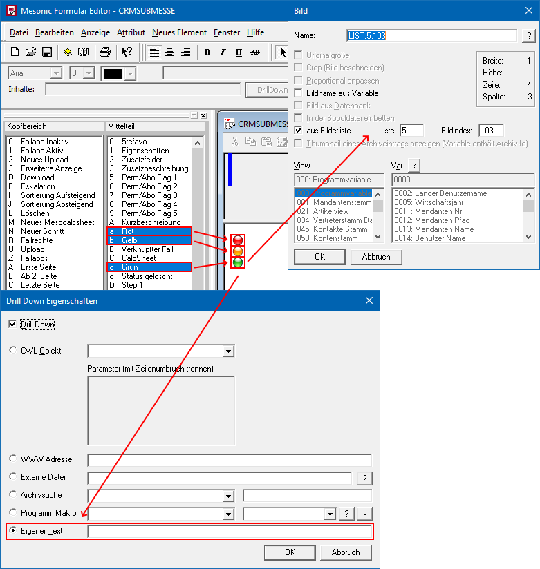
ü 14 - Fall löschen
Wird diese
Aktion ausgeführt, so wird - nachdem die darauffolgende Meldung mit "Ja"
bestätigt wird - der Fall gelöscht. Verknüpfte Fälle bleiben davon
unberührt.
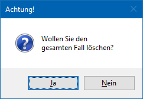
ü 15 - Setze Level
Diese
Folgeaktion wird aktuell nicht unterstützt.
ü 16 - Zeiteintrag schreiben
Mit
dieser Aktion wird ein Zeiteintrag (Fehlzeit oder Istzeit) in die Zeitentabelle
(T160) vorgenommen. Voraussetzung dafür ist, dass der Workflowschritt mit einer
entsprechenden Zeitart verknüpft ist.
ü 17 - Zeiteintrag
aktualisieren
Mit dieser Aktion wird ein bestehender Zeiteintrag (Fehlzeit
oder Istzeit) in die Zeitentabelle (T160) aktualisiert. Voraussetzung dafür ist,
dass der Workflowschritt mit einer entsprechenden Zeitart verknüpft ist und
bereits ein Zeiteintrag geschrieben wurde.
ü 18 - Zeiteintrag löschen
Mit
dieser Aktion wird ein bestehender Zeiteintrag (Fehlzeit oder Istzeit) in die
Zeitentabelle (T160) gelöscht. Voraussetzung dafür ist, dass der Workflowschritt
mit einer entsprechenden Zeitart verknüpft und bereits ein Zeiteintrag vorhanden
ist.
ü 20 - Schreibe CRM
Zusatzfeld
Bei Ausführen eines Workflowschritts kann ein CRM-Zusatzfeld
automatisch mit einem bestimmten Wert befüllt werden. Hierfür müssen im
nachfolgenden Einstellungsfenster die Angaben "Zusatzfeld" und "Wert" hinterlegt
werden.
ü 21 - Schreibe Personenkonto
Zusatzfeld
Bei Ausführen eines Workflowschritts kann ein Zusatzfeld aus dem
Personenkontenstamm automatisch mit einem bestimmten Wert befüllt werden.
Hierfür müssen im nachfolgenden Einstellungsfenster die Angaben "Zusatzfeld" und
"Wert" hinterlegt werden. Zusätzlich muss im CRM-Fall ein Konto angegeben worden
sein.
ü 22 - Schreibe Projekt
Zusatzfeld
Bei Ausführen eines Workflowschritts kann ein Zusatzfeld aus dem
Projektstamm automatisch mit einem bestimmten Wert befüllt werden. Hierfür
müssen im nachfolgenden Einstellungsfenster die Angaben "Zusatzfeld" und "Wert"
hinterlegt werden. Zusätzlich muss im CRM-Fall ein Projekt angegeben worden
sein.
ü 23 - Schreibe Artikel
Zusatzfeld
Bei Ausführen eines Workflowschritts kann ein Zusatzfeld aus dem
Artikelstamm automatisch mit einem bestimmten Wert befüllt werden. Hierfür
müssen im nachfolgenden Einstellungsfenster die Angaben "Zusatzfeld" und "Wert"
hinterlegt werden. Zusätzlich muss im CRM-Fall ein Artikel angegeben worden
sein.
ü 24 - Schreibe Vertreter
Zusatzfeld
Bei Ausführen eines Workflowschritts kann ein Zusatzfeld aus dem
Vertreterstamm automatisch mit einem bestimmten Wert befüllt werden. Hierfür
müssen im nachfolgenden Einstellungsfenster die Angaben "Zusatzfeld" und "Wert"
hinterlegt werden. Zusätzlich muss im CRM-Fall ein Vertreter angegeben worden
sein.
ü 25 - Schreibe Kontakte
Zusatzfeld
Bei Ausführen eines Workflowschritts kann ein Zusatzfeld aus dem
Kontaktestamm automatisch mit einem bestimmten Wert befüllt werden. Hierfür
müssen im nachfolgenden Einstellungsfenster die Angaben "Zusatzfeld" und "Wert"
hinterlegt werden. Zusätzlich muss im CRM-Fall ein Kontakt angegeben worden
sein.
ü 26 - Projekteintrag
schreiben
Mit Hilfe dieser Folgeaktion werden die folgenden Feldinhalte aus
dem CRM-Fall in die Projekterfassung übergeben.
ü Projektnummer (Pflicht)
ü Artikel (Pflicht)
ü Mitarbeiter (Pflicht)
ü Startdatum (sollte Pflicht sein)
ü Anzahl Einheit (sollte Pflicht sein)
ü Langbeschreibung intern (optional)
Hinweis
In dem Projekteintrag werden der Wert und die WinLine KORE-Daten nicht gefüllt und die Verrechnungsoption standardmäßig auf "0" gesetzt.
Achtung
Diese Folgeaktion ist ein Bestandteil des WinLine TIME! Aus dem Grund ist die Hinterlegung einer Zeitart innerhalb des CRM-Falls Pflicht.
ü 27 - Projekteintrag
aktualisieren
Diese Folgeaktion wird derzeit nicht unterstützt.
ü 28 - Projekteintrag
löschen
Diese Folgeaktion wird derzeit nicht unterstützt.
ü 30 - Fall-ABO eintragen für
Mit
Hilfe dieser Aktion wird für ein sogenanntes "Zielobjekt" (Benutzer, Gruppen,
etc.) ein Fall-ABO eingetragen.
Hinweis 1
Abonnenten sind in weiterer Folge selber ein zur Auswahl stehendes "Zielobjekt". Mit Hilfe dieser Technik können z.B. allen Fallabonnenten Mails geschickt werden, sobald ein Workflowschritt bei dem CRM-Fall geschrieben wird.
Hinweis 2
Neben der automatischen Variante des Fall-ABOs kann dieses auch durch Anwahl des Buttons "Abo setzen" in der CRM-Fallansicht gesetzt werden.
ü 31 - Fall-ABO löschen von
Mit
dieser Aktion wird einem sogenannten "Zielobjekt" (Benutzer, Gruppen, etc.) das
Fall-ABO entzogen.
ü 32 - Alle Fall-ABOs
löschen
Durch diese Folgeaktionen werden für alle sogenannten "Zielobjekte"
(Benutzer, Gruppen, etc.) die Fall-ABOs gelöscht.
ü 33 - Gesplitteten Fall
anzeigen
Diese Folgeaktion öffnet die Fallansicht des - im selben Schritt -
abgeleiteten Falles (Tochterfall). Vorangegangen auf diese Folgeaktion sollten
somit die Folgeaktionen "Splitte Fall" und "Schreibe Workflowschritt"
sein.
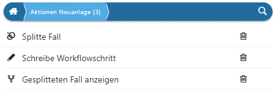
Wird diese Folgeaktion hinterlegt, ohne zuvor (im gleichen Schritt) einen Fall abzuleiten, so wird diese auf den aktuellen Fall ausgeführt.
ü 34 - Gesplitteten Fall
bearbeiten
Diese Folgeaktion öffnet die Eingabemaske des "höchsten" (letzten)
Schrittes aus dem - im selben Schritt - abgeleiteten Fall und befindet sich
somit im Status "Bearbeiten" des Schrittes. Vorangegangen auf diese Folgeaktion
sollten somit die Folgeaktionen "Splitte Fall" und "Schreibe Workflowschritt"
sein.
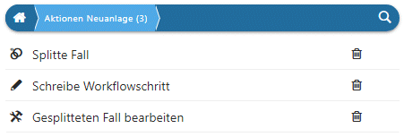
Wird diese Folgeaktion hinterlegt, ohne zuvor (im gleichen Schritt) einen Fall abzuleiten, so wird diese auf den aktuellen Fall ausgeführt.
ü 38 - Wert setzen
Mit dieser
Aktion können bestimmte Felder befüllt oder Feldinhalte überschrieben werden
(dabei erfolgt keine gesonderte Plausibilitätsprüfung). Folgende Tabellen können
dazu verwendet werden:
ü V050
ü T055
ü T060
ü V021
ü T024
ü T034
ü T045
Die Verknüpfung zur Zieltabelle erfolgt automatisch über den entsprechenden Eintrag im Fall selbst (z.B. Kontonummer T170/C009). Wird kein entsprechender Eintrag im Fall gefunden, so wird auch kein Wert gesetzt. Im Feld "Wert" des Einstellungsfensters selbst kann der gewünschte Wert hinterlegt werden. Der Aufbau dazu muss wie folgt lauten:
ü {VAR:x/y}=WERT wobei x für die Zieltabelle und y für die Zielspalte steht
Jener Eintrag nach dem "="-Zeichen wird ins angegebene Feld gestellt. Als "Wert" kann ein fixer Wert vorgegeben werden oder dieser Wert wird aus dem Fall selbst geholt (aus den CRM-Tabellen "T170" oder "T171"), z.B.:
ü {VAR:x/y}={VAR:170/17}
ü {VAR:x/y}=eigenerAnfangstext{VAR:170/17}eigenerSchlusstext
Beispiele für Wert setzen
ü Konto: Zusatzfelder mit der
WorkflowNummer befüllen
{VAR:50/201}=WFID {VAR:170/17}
{VAR:50/231}= WFID
{VAR:170/17}
ü Konto: Notiz mit der
Kurzbeschreibung befüllen
{VAR:55/83}=Text {VAR:170/18}
ü Projekte: das Kundenkonto als
Debitor im Projektestamm hinterlegen
{VAR:60/4}=Text {VAR:170/9}
ü Artikel: Zusatzfelder mit dem
Workflownamen befüllen
{VAR:21/201}=WFNAME {VAR:171/2}
ü 40 - Schreibe CRM
Eigenschaft
Beim Schreiben eines Workflowschrittes kann automatisch eine
CRM-Eigenschaft gesetzt werden. Hierfür müssen im nachfolgenden
Einstellungsfenster die Angaben "Eigenschaft Kategorie" und "Eigenschaft"
hinterlegt werden.
ü 41 - Schreibe Eigenschaft
(Personenkonto)
Beim Schreiben eines Workflowschrittes kann automatisch eine
Eigenschaft im Personenkonto gesetzt werden. Hierfür müssen im nachfolgenden
Einstellungsfenster die Angaben "Eigenschaft Kategorie" und "Eigenschaft"
hinterlegt werden. Zusätzlich muss im CRM-Fall ein Konto angegeben worden
sein.
ü 42 - Schreibe Eigenschaft
(Projekt)
Beim Schreiben eines Workflowschrittes kann automatisch eine
Eigenschaft im Projektestamm gesetzt werden. Hierfür müssen im nachfolgenden
Einstellungsfenster die Angaben "Eigenschaft Kategorie" und "Eigenschaft"
hinterlegt werden. Zusätzlich muss im CRM-Fall ein Projekt angegeben worden
sein.
ü 43 - Schreibe Eigenschaft
(Artikel)
Beim Schreiben eines Workflowschrittes kann automatisch eine
Eigenschaft im Artikelstamm gesetzt werden. Hierfür müssen im nachfolgenden
Einstellungsfenster die Angaben "Eigenschaft Kategorie" und "Eigenschaft"
hinterlegt werden. Zusätzlich muss im CRM-Fall ein Artikel angegeben worden
sein..
ü 44 - Schreibe Eigenschaft
(Vertreter)
Beim Schreiben eines Workflowschrittes kann automatisch eine
Eigenschaft im Vertreterstamm gesetzt werden. Hierfür müssen im nachfolgenden
Einstellungsfenster die Angaben "Eigenschaft Kategorie" und "Eigenschaft"
hinterlegt werden. Zusätzlich muss im CRM-Fall ein Vertreter angegeben worden
sein.
ü 45 - Schreibe Eigenschaft
(Kontakt)
Beim Schreiben eines Workflowschrittes kann automatisch eine
Eigenschaft im Kontaktestamm gesetzt werden. Hierfür müssen im nachfolgenden
Einstellungsfenster die Angaben "Eigenschaft Kategorie" und "Eigenschaft"
hinterlegt werden. Zusätzlich muss im CRM-Fall ein Kontakt angegeben worden
sein.
ü 46 - Lösche CRM
Eigenschaft
Beim Schreiben eines Workflowschrittes kann automatisch eine
CRM-Eigenschaft gelöscht werden. Jene Eigenschaft, welche gelöscht werden soll,
muss hierfür im nachfolgenden Einstellungsfenster mit Hilfe der Felder
"Eigenschaft Kategorie" und "Eigenschaft" angegeben werden.
ü 47 - Lösche Eigenschaft
(Personenkonto)
Beim Schreiben eines Workflowschrittes kann automatisch eine
Eigenschaft im Personenkonto gelöscht werden. Jene Eigenschaft, welche gelöscht
werden soll, muss hierfür im nachfolgenden Einstellungsfenster mit Hilfe der
Felder "Eigenschaft Kategorie" und "Eigenschaft" angegeben werden. Zusätzlich
muss im CRM-Fall ein Konto hinterlegt worden sein.
ü 48 - Lösche Eigenschaft
(Projekt)
Beim Schreiben eines Workflowschrittes kann automatisch eine
Eigenschaft im Projektestamm gelöscht werden. Jene Eigenschaft, welche gelöscht
werden soll, muss hierfür im nachfolgenden Einstellungsfenster mit Hilfe der
Felder "Eigenschaft Kategorie" und "Eigenschaft" angegeben werden. Zusätzlich
muss im CRM-Fall ein Projekt hinterlegt worden sein.
ü 49 - Lösche Eigenschaft
(Artikel)
Beim Schreiben eines Workflowschrittes kann automatisch eine
Eigenschaft im Artikelstamm gelöscht werden. Jene Eigenschaft, welche gelöscht
werden soll, muss hierfür im nachfolgenden Einstellungsfenster mit Hilfe der
Felder "Eigenschaft Kategorie" und "Eigenschaft" angegeben werden. Zusätzlich
muss im CRM-Fall ein Artikel hinterlegt worden sein.
ü 50 - Lösche Eigenschaft
(Vertreter)
Beim Schreiben eines Workflowschrittes kann automatisch eine
Eigenschaft im Vertreterstamm gelöscht werden. Jene Eigenschaft, welche gelöscht
werden soll, muss hierfür im nachfolgenden Einstellungsfenster mit Hilfe der
Felder "Eigenschaft Kategorie" und "Eigenschaft" angegeben werden. Zusätzlich
muss im CRM-Fall ein Vertreter hinterlegt worden sein.
ü 51 - Lösche Eigenschaft
(Kontakt)
Beim Schreiben eines Workflowschrittes kann automatisch eine
Eigenschaft im Kontaktestamm gelöscht werden. Jene Eigenschaft, welche gelöscht
werden soll, muss hierfür im nachfolgenden Einstellungsfenster mit Hilfe der
Felder "Eigenschaft Kategorie" und "Eigenschaft" angegeben werden. Zusätzlich
muss im CRM-Fall ein Kontakt hinterlegt worden sein.
ü 52 - Schreibe Arbeitnehmer
Eigenschaft
Beim Schreiben eines Workflowschrittes kann automatisch eine
Eigenschaft im Arbeitnehmerstamm gesetzt werden. Hierfür müssen im nachfolgenden
Einstellungsfenster die Angaben "Eigenschaft Kategorie" und "Eigenschaft"
hinterlegt werden. Zusätzlich muss im CRM-Fall ein Arbeitnehmer bzw. Mitarbeiter
angegeben worden sein.
ü 53 - Lösche Arbeitnehmer
Eigenschaft
Beim Schreiben eines Workflowschrittes kann automatisch eine
Eigenschaft im Arbeitnehmerstamm gelöscht werden. Jene Eigenschaft, welche
gelöscht werden soll, muss hierfür im nachfolgenden Einstellungsfenster mit
Hilfe der Felder "Eigenschaft Kategorie" und "Eigenschaft" angegeben werden.
Zusätzlich muss im CRM-Fall ein Arbeitnehmer bzw. Mitarbeiter hinterlegt worden
sein.
ü 55 - Archiviere Fall
Bei dieser
Folgeaktion wird die Fallansicht als Adobe-PDF "gedruckt" und als Archiveintrag
bzw. Upload zum Fall abgelegt. Voraussetzung dafür ist ein installierter mesonic
PDF Converter.
ü 60 - Schreibe Status Pre
Sales
Mit dieser Aktion kann ein Pre Sales Status zu einem, im Fall
angegebenen, Projekt geschrieben werden. Der Status bzw. der Text zum Status
kann in dem nachfolgenden Einstellungsfenster angegeben werden.
ü 61 - Schreibe Status Post
Sales
Mit dieser Aktion kann ein Post Sales Status zu einem, im Fall
angegebenen, Projekt geschrieben werden. Der Status bzw. der Text zum Status
kann in dem nachfolgenden Einstellungsfenster angegeben werden.
ü 67 - Vorlage vor CRM Fall
öffnen
Mit dieser Funktion kann vor Schreiben des Schrittes ein individuelles
Fenster (Vorlage) angesprochen bzw. geöffnet werden.
Hierzu muss im
Einstellungsfenster der "Vorlagentyp" und eine entsprechende "Vorlage" (ein
individuelles Formular) angegeben sein. Zusätzlich kann im Falle einer
Belegvorlage auch die "Belegstufe angegeben werden, in welcher der Beleg erfasst
bzw. weiterbearbeitet werden soll.
Hinweis
Handelt es sich bei der Vorlage
um eine Belegvorlage, so wird bei Neuanlage eines Beleges die Verknüpfung zum
Workflow/Aktionsschritt im Beleg gespeichert. Wird ein CRM-Eintrag zu einem
bestehenden Workflow geschrieben, welcher bereits bei einem Beleg hinterlegt
ist, so wird der Beleg automatisch aufgerufen.
Wenn mehr als ein Beleg
gefunden wird, bei dem der Workflow hinterlegt ist, so wird der Belegmatchcode
geöffnet, um den entsprechenden Beleg auswählen zu können.
ü 68 - Beleg splitten
Mit Hilfe
dieser Folgeaktion kann das WinLine FAKT-Fenster "Belege splitten" geöffnet
werden, wobei die Kontonummer bereits vorbesetzt ist. Hierzu muss im
Einstellungsfenster unter "Wert" die Kontonummer hinterlegt werden.
ü 69 - Beleg erfassen
Durch diese
Folgeaktion kann ein Beleg für das Personenkonto des CRM-Falls erstellt werden.
Es wird hierbei automatisch die zuletzt verwendete Vorlage der Belegerfassung
verwendet. Sollte bereits ein Beleg zu dem CRM-Fall erfasst worden sein, so wird
dieser automatisch geladen.
Hinweis
Im Gegensatz zu den Folgeaktionen "67 - Vorlage vor CRM Fall öffnen" und "97 - Vorlage nach CRM Fall öffnen" kann die Belegvorlage und die Belegstufe hier nicht definiert werden, wodurch z.B. eine Belegwandlung nicht möglich wäre.
ü 70 - Beleg Pro Import
Durch
diese Folgeaktion wird ein Beleg Pro-Vorgang abgeschlossen, d.h. die
vorbereitete Buchung in einen FIBU-Stapel abgestellt bzw. der Beleg in der
WinLine FAKT erzeugt.
ü 71 - FORM Objekt Neuanlage
Mit
Hilfe dieser Folgeaktion kann in Folge des Schritt-Schreibens eine definierte
FORM geöffnet, mit Werten versehen und abschließend als Upload im Fall
gespeichert werden.
ü 72 - FORM Objekt
bearbeiten
Diese Folgeaktion ermöglicht das Bearbeiten der zuletzt
hinzugefügten FORM im entsprechend angelegten Fall.
ü 73 - Mail mit FORM Objekt
Wenn
im gewählten CRM-Schritt ein Textbaustein mit einem Link auf die publizierte
FORM vorhanden ist, dann wird mit dieser Folgeaktion ein Link zur Form inkl.
GUID erstellt. Die Voraussetzung dafür ist, dass der Workflow ursprünglich via
MesoMail gestartet wurde, da auch an diese Mailadresse zurückgesendet wird bzw.
ein FORM-Objekt im entsprechend angelegten Fall vorhanden sein muss.
ü 76 - Farbauswahl Vorlage
Mit
dieser Folgeaktion kann eine Farbauswahl für die CRM-Fallerfassung (individuelle
Vorlage; Feld "Farbe") geschaffen werden. Hierfür ist es notwendig in dem
nachfolgenden Einstellungsfenster "Farbauswahl Vorlage" ein Text und eine Farbe
auszuwählen.
Somit kann im CRM-Fenster der angegebene Text gewählt werden, im
CRM-Schritt selbst wird der Farbcode mitgeführt. Damit besteht die Möglichkeit,
pro CRM-Schritt eine eigene Farbe mitzuführen (T170/C041).
Hinweis
Die Folgeaktion muss unter "Neuanlage" hinterlegt werden (Hinterlegung im Bereich "Bearbeitung" finden keine Anwendung). Werden unterschiedliche Auswahlen benötigt, so muss die Folgeaktion mehrfach hinterlegt werden.
Achtung
Ist das Feld "Farbe" in der individuellen Vorlage des CRM-Falls vorhanden, jedoch keine Folgeaktion "76 - Farbauswahl Vorlage" zum CRM-Schritt hinterlegt, so gibt es 2 Varianten:
ü Es ist eine Farbe im CRM-Schritt
(siehe Bereich Parameter)
hinterlegt, dann kann aus der Auswahlliste der Eintrag "lt. Schrittdefinition"
(= Standardvorbelegung) gewählt werden.
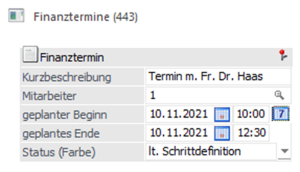
ü Es ist auch im CRM-Schritt Schritt
(siehe Bereich Parameter) keine
Farbe hinterlegt, so muss der Eintrag "keine Farbdefinition" (=
Standardvorbelegung) gewählt werden.
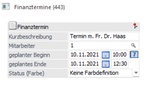
ü 80 - Eskalationsspanne
(Stunden)
Mit dieser Funktion kann das Feld "Eskalationsdatum" mit einem
neuen Wert befüllt werden. Je nachdem welcher Wert (Anzahl der Stunden,
einzutragen im Feld "Eingabe") hinterlegt ist, wird das Eskalationsdatum beim
Schreiben des Schrittes um diesen erhöht.
ü 81 - Eskalationsspanne
(Tage)
Mit dieser Funktion kann das Feld "Eskalationsdatum" mit einem neuen
Wert versehen werden. Je nachdem welcher Wert (Anzahl der Tage, einzutragen im
Feld "Eingabe") hinterlegt ist, wird das Eskalationsdatum beim Schreiben des
Schrittes um diesen erhöht.
ü 82 - Mailversand an PAB
Mit
dieser Funktion wird die zu versendende E-Mail an das Postausgangsbuch
übergeben, wobei der Versand nicht direkt erfolgt. Dieses hat den Vorteil, dass
die Nachricht bei Bedarf noch bearbeitet werden kann.
Hinweis
Wurden im Bereich Textbausteine die Felder "Extern" und "Textbausteingruppe" gefüllt, so steht innerhalb des Postausgangsbuch der Corporate WinLine der Button "Textbaustein (CRM-Mail)" zur Verfügung. Mit dessen Hilfe kann der Text der E-Mail schnell und einfach gewechselt werden, wobei alle Text der hinterlegten Gruppe zur Verfügung stehen.
ü 83 - Mail Attachement
Mit
dieser "Folgeaktion" wird ein Email an die angegebene Person, Benutzergruppe,
Personengruppe, usw. versendet, welches im Anhang die Dokumente aus dem Workflow
hat. Handelt es sich bei einem Dokument aus dem Fall um eine so
mesonic-spl-Datei, so wird diese Datei im Zuge des Mailversands zuerst in ein
PDF umgewandelt, und anschließend als Mailanhang angefügt.
ü 84 - Mail Attachement (ohne
Login)
Mit dieser "Folgeaktion" wird ein Email an die angegebene Person,
Vertreter, Kontakt usw. versendet, welches im Anhang die Dokumente aus dem
Workflow hat. Hierzu muss der "Empfänger" des Mails eine Mailadresse zugewiesen
haben; z.B. im Personenkontenstamm, Vertreterstamm, etc. Es ist dabei nicht
notwendig, dass dieser "Empfänger" ein eigenes Login (z.B. WinLine-Benutzer oder
WebBenutzer) hat. Handelt es sich bei einem Dokument aus dem Fall um eine so
mesonic-spl-Datei, so wird diese Datei im Zuge des Mailversands zuerst in ein
PDF umgewandelt und anschließend als Mailanhang angefügt.
ü 85 - Exchange Startdatum
Mit
dieser Folgeaktion, kann der Abgleich eines Startdatums sowie Enddatums mit
Exchange erfolgen.
Es kann die Vorbelegung für die XRM-Tabelle auf Benutzer
und / oder Benutzergruppen sowie den aktuellen Benutzer erfolgen.
ü 86 - Exchange Kalenderdatum
Mit
dieser Folgeaktion, kann der Abgleich eines Kalenderdatums mit Exchange
erfolgen.
Es kann die Vorbelegung für die XRM-Tabelle auf Benutzer und/oder
Benutzergruppen sowie den aktuellen Benutzer erfolgen.
ü 87 - Exchange
Eskalationsdatum
Mit dieser Folgeaktion, kann der Abgleich eines
Eskalationsdatums mit Exchange erfolgen.
Es kann die Vorbelegung für die
XRM-Tabelle auf Benutzer und/oder Benutzergruppen sowie den aktuellen Benutzer
erfolgen.
ü 90 - Outlook Termin
Startdatum
Mit dieser Folgeaktion kann auf Basis des "Start-" sowie
"Enddatums" (inkl. Uhrzeit) ein Kalendereintrag im Outlook-Kalender erzeugt
werden. Dabei werden folgende Felder an Outlook übergeben: CRM-Kurzbeschreibung
= Outlook-Betreff, CRM-Langbeschreibung intern und extern =
Outlook-Notizfeld.
ü 91 - Outlook Termin
Kalenderdatum
Mit dieser Folgeaktion kann auf Basis des "Kalenderstart-"
sowie "Kalenderenddatums" (inklusive Uhrzeit) ein Kalendereintrag im
Outlook-Kalender erzeugt werden. Dabei werden folgende Felder an Outlook
übergeben: CRM-Kurzbeschreibung = Outlook-Betreff, CRM-Langbeschreibung intern
und extern = Outlook-Notizfeld.
ü 92 - Outlook Termin
Eskalationsdatum
Mit dieser Aktion kann auf Basis des "Eskalationsdatums" ein
Kalendereintrag im Outlook-Kalender erzeugt werden. Dabei werden folgende Felder
an Outlook übergeben: CRM-Kurzbeschreibung = Outlook-Betreff,
CRM-Langbeschreibung intern und extern = Outlook-Notizfeld.
ü 93 - Outlook Notiz
Durch diese
Aktion wird eine Notiz im Outlook angelegt. Übergeben werden dabei die
CRM-Langbeschreibung intern und extern.
ü 96 - Emailversand (ohne
Login)
An die angegebene Person, Benutzergruppe, oder Personengruppe wird ein
Email versandt. Hierzu muss es für den Empfänger des Mails eine Mailadresse
zugewiesen haben; z.B. im Personenkontenstamm. Hinweis Vertreter: wird diese
Aktion mit dem Zielobjekt "04 Vertreter" gewählt und ist im CRM-Fall KEIN
Vertreter jedoch ein Personenkonto vorhanden, so wird auf die Mailadresse des
Vertreters aus dem angegebenen Personenkonto zurückgegriffen.
ü 97 - Vorlage nach CRM Fall
öffnen
Mit dieser Funktion kann nach Schreiben des Schrittes ein
individuelles Fenster (Vorlage) angesprochen/geöffnet werden. Dazu muss im Feld
"Vorlagentyp" sowie "Vorlage" ein individuelles Fenster angegeben sein. Im Falle
einer Belegvorlage kann zusätzlich die Belegstufe angegeben werden. Handelt es
sich bei der Vorlage um eine Belegvorlage, so wird bei Neuanlage eines Beleges
die Verknüpfung zum Workflow/Aktionsschritt im Beleg gespeichert. Wird ein
CRM-Eintrag zu einem bestehenden Workflow geschrieben welcher bereits bei einem
Beleg hinterlegt ist, so wird der Beleg automatisch aufgerufen. Wenn mehr als
ein Beleg gefunden wird, bei dem der Workflow hinterlegt ist, wird der
Belegmatchcode geöffnet, um den entsprechenden Beleg auswählen zu können.
Zusätzlich kann zur Belegvorlage eine Belegstufe angegeben werden, in der der
Beleg erfasst bzw. weiterbearbeitet werden soll.
ü 98 - MesoCalc öffnen
Durch
diese Aktion wird nach Schreiben des Schrittes ein MesoCalc-Sheet geöffnet,
welches bearbeitet werden kann. Der Name des MesoCalc-Sheet muss im Feld
"Eingabe" angegeben sein. Nachdem das MesoCalc-Sheet gespeichert wird, wird
dieses zusätzlich als Archiveintrag gespeichert.
ü 99 - MesoCalc editieren
Wurde
im Fall bereits ein MesoCalc-Sheet eingebunden, so kann mittels dieser Aktion
das Calcsheet zur Bearbeitung geöffnet werden.
Ø Kategorie
An dieser Stelle kann gewählt werden, ob die Folgeaktion bei der Neuanlage eines CRM-Schritts (Neuanlage) oder beim Editieren (Bearbeitung) ausgeführt werden soll.
Hinweis
Das Drag & Drop von Einträgen in einem "CRM-Kalender" zählt auch zum Editieren.
Fenster "Einstellungen"
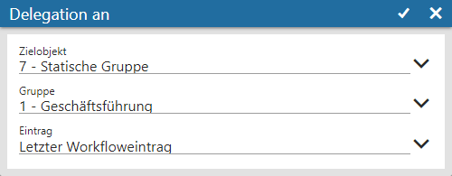
Das Einstellungsfenster wird immer abhängig von der Folgeaktion geöffnet und beinhaltet somit die unterschiedlichsten Eingabefelder.
Ø Zielobjekt
An dieser Stelle wird hinterlegt, für wen die definierte Aktion erfolgen soll.
ü Konto
ü Kontakt (Konto)
ü Händler Konto
ü Arbeitnehmer
ü Vertreter
ü Usereingabe für Person
ü Usereingabe für Gruppe
ü Statische Gruppe
ü Statische Person
ü Fallabonnenten
ü Administrator
Hinweis
Dieses Objekt kann nur verwendet werden um ein Mail (z.B. als Kontrollfunktion) zu versenden. Hierzu wird die Mailadresse herangezogen die im WinLine ADMIN (CRM-Kompakt) unter "Admin Mail" eingetragen ist.
ü Aktuelle User
ü Schrittverfasser
ü Händler Kontakt
ü Letzter User
ü Händlerlogin
Achtung
Neben den allgemein zugänglichen Objekten stehen die folgenden nur in Verbindung mit WinLine TIME zur Verfügung:
ü ANGrp. fix von Stufe 1 - 5
ü ANGrp. meine Stufe
ü ANGrp. meine Stufe -1 bis -4
ü Autom. bis zur Stufe 1 bis 5
Ø Eintrag
Hier kann nach Angabe der Aktion und des Objektes gewählt werden, auf welchen Schritt sich diese Angaben beziehen sollen. Hierbei stehen die folgenden 3 Einträge zur Verfügung:
ü Letzter Workfloweintrag
ü Vorletzter Schritt
ü Erster Schritt
Beispiel 1
Wird als Aktion z.B. "0 - Mailversand an" angegeben und als Objekt z.B. "Schrittverfasser", dann kann aus der Auswahlliste gewählt werden, ob ein Email an den Schrittverfasser des "Letzten Schritts", des "Vorletzten Schritts" oder des "Ersten Schritts" gesendet werden soll.
Beispiel 2
Wird von einer Person, die einer Personengruppe zugeordnet ist, eine Rückfrage (an den Kunden) gestellt, erfolgt die Beantwortung dieser Rückfrage normalerweise an die Personengruppe.
Wird jedoch aus der Auswahlliste der Eintrag "Vorletzter Workfloweintrag" gewählt, so erhält nur die Person, die die Rückfrage gestellt hat, auch die Antwort.
Ø Eingabe
Je nach Typ der Folgeaktion müssen in diesem Feld entsprechend weitere Angaben gemacht werden. Zur Unterstützung steht ein Matchcode zur Verfügung.
Beispiele
ü Mailversand an, Delegation an,
Fallrechte eintragen, Lösche Fallrechte von, Alle Fallrechte löschen, Fall-Abo
eintragen für, Fall-Abo löschen von, Alle Fall-Abos löschen, Mailversand (ohne
Login)
Abhängig vom Zielobjekt kann in diesem Feld eine "Statische Person"
oder "Statische Gruppe" angegeben werden.
ü Schreibe
Workflow-Schritt
Anzugeben ist, welcher Aktions- bzw. Workflowschritt
geschrieben werden soll.
ü Schreibe (x) Zusatzfeldwert
Im
Feld "Wert" muss jener Wert angegeben werden, welcher in das angegebene
Zusatzfeld geschrieben werden soll.
ü Schreibe Status Pre Sales
Status/Post Sales
Im Feld "Wert" kann jener Text angegeben werden, der zum
jeweiligen Status der Projektänderung geschrieben werden soll.
ü Eskalationsspanne
(Stunden)
Angabe der Stunden die zum aktuellen Datum (Systemdatum)
hinzugezählt werden sollen um daraus das Eskalationsdatum neu zu berechnen.
ü Eskalationsspanne (Tage)
Angabe
der Tage die zum aktuellen Datum (Systemdatum) hinzugezählt werden sollen um
daraus das Eskalationsdatum neu zu berechnen.
ü MesoCalc öffnen
Der Name des
MesoCalc-Sheets, das in den Fall eingebunden werden soll, muss hier angegeben
werden.
ü MesoCalc editieren
Der Name des
MesoCalc-Sheets, das in dem Fall eingebunden ist und bearbeitet werden soll,
muss hier angegeben werden.
Ø Fallrechte eintragen / Zielobjekt / Eintrag
Um in Workflows sogenannte Schrittberechtigungen zu vergeben, muss die Folgeaktion "3 - Fallrechte eintragen" gewählt werden (bei "Aktionen" gibt es keine Berechtigungsprüfung). Anschließend erfolgt über die An- bzw. Abwahl von Icons die Zuweisung der Berechtigungen:
ü - Fallrechte sehen
Dieses Recht
berechtigt dazu, einen Fall angezeigt zu bekommen.
ü - Datei uploaden
Dieses Recht berechtigt
dazu, eine Datei einem Fall hinzuzufügen.
ü - Datei downloaden
Dieses Recht
berechtigt dazu, einen Download einer Datei, die dem Fall hinzugefügt wurde,
durchzuführen.
ü - Fallrechte eintragen
In der WinLine
WebEditon gibt dieses Recht die Berechtigung, direkt über die Fallansicht Rechte
ändern zu können.
In der WinLine wird hierüber gesteuert, ob man in der
Fallansicht die "erweitere Ansicht" aktivieren darf.
ü - Neuen Schritt schreiben
Dieses Recht
berechtigt dazu, einen neuen Schritt im Workflow schreiben zu dürfen, d.h. man
ist grundsätzlich in der Lage, einen weiteren Schritt schreiben zu dürfen.
Hinweis
Die Fallrechte gelten hierbei immer für den gesamten CRM-Fall und nicht pro Schritt. D.h. wurde einmal ein z.B. Lese-Recht gewährt, so muss dieses in der Folge nicht immer wieder hinterlegt werden.
Achtung
Eine Änderung in bestehenden und verwendeten Workflows hat keine Auswirkung auf bereits erfasste CRM-Fälle.
Ø Freigabe Flag / Freigabeobjekt
Wurde die Folgeaktion "10 - Freischaltung" gewählt, so kann aus der Auswahlliste zunächst der gewünschte Freigabestatus definiert werden.
Die Definition des Objekts, für welches der angegebene Status gesetzt werden soll, erfolgt über das Feld "Freigabeobjekt". Als Objekt-Auswahlmöglichkeiten stehen hier zur Verfügung:
ü Artikel
ü Debitoren / Kreditoren
ü Angebot / Verkauf
ü Auftrag / Verkauf
ü Lieferschein / Verkauf
ü Faktura / Verkauf
ü Angebot / Einkauf
ü Auftrag / Einkauf
ü Lieferschein / Einkauf
ü Faktura / Einkauf
Hinweis
Neben diesen Auswahlen steht auch die Auswahl "Objekttyp siehe Startschritt" zur Verfügung. Hierbei wird auf jenes Objekt zugegriffen, welches im Startschritt des Workflows (Bereich Parameter) angegeben wurde.
Ø Zusatzfeld / Wert
Wurde eine Folgeaktion des Typs "Schreibe Zusatzfeldwert" gewählt, so kann aus der Auswahlliste das gewünschte Zusatzfeld angegeben werden. Im folgenden Feld "Wert" erfolgt die Hinterlegung des Werts.
Ø Eigenschaft Kategorie / Eigenschaft
Wurde eine Folgeaktion des Typs "Schreibe Eigenschaft" oder "Lösche Eigenschaft" hinterlegt, so kann aus der Auswahlliste "Eigenschaft Kategorie" zunächst die gewünschte Eigenschaftskategorie ausgewählt werden. Anschließend wird das Feld "Eigenschaft" zur Verfügung gestellt. In diesem kann per Auswahlliste der Eigenschaftswert definiert werden, welcher gesetzt oder entfernt werden soll.
Hinweis
Es stehen ausschließlich Eigenschaften des Typs "M - Mehrfachauswahl" und "7 - Fix" zur Verfügung. Bei Mehrfachauswahl-Eigenschaften kann zusätzlich nur ein Eigenschaftswert gewählt werden.
Ø Vorlage (vor CRM Fall / nach CRM Fall öffnen)
Wird als Folgeaktion der Typ "Vorlage (vor CRM Fall / nach CRM Fall) öffnen" gewählt so muss in weiterer Folge der Vorlagentyp, sowie die eigentliche Vorlage, das sogenannte individuelle Formular, angegeben werden. In der Auswahllistbox stehen die vorhandenen individuellen Formulare zur Auswahl.